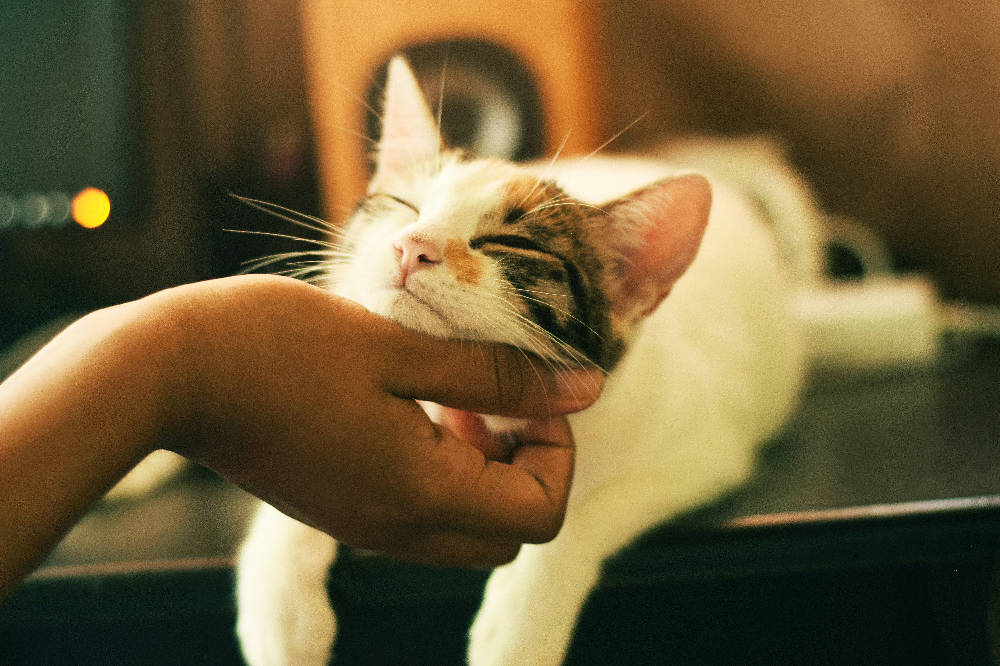
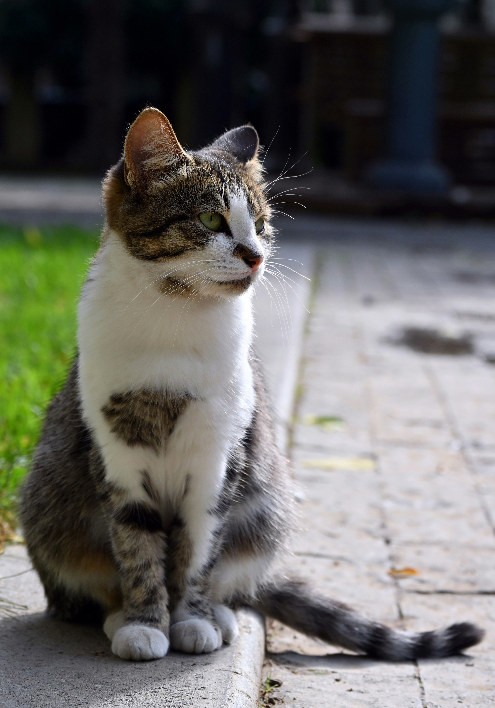
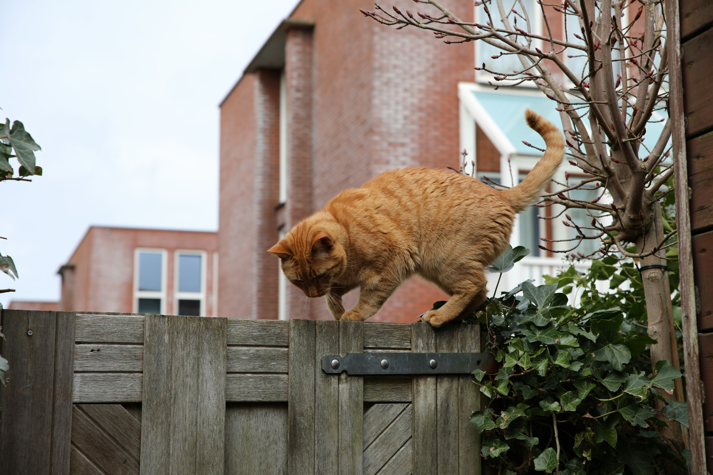

How the Cat Distribution System Works
Photo by Diego San
Step 1: You are identified as a Future Cat Owner.

Photo by Daniel Silva
Step 2: The nearest stray cat is notified that your house is nearby and in need of a cat.

Photo by Oscar Fickel
Step 3: The formerly stray cat finds and enters your house while you aren't looking.